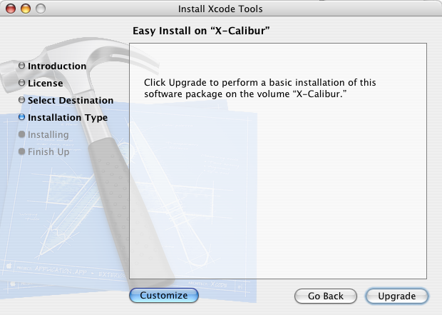
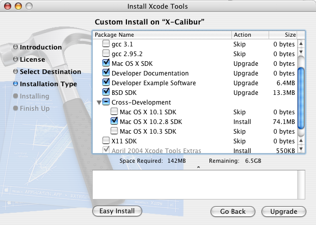
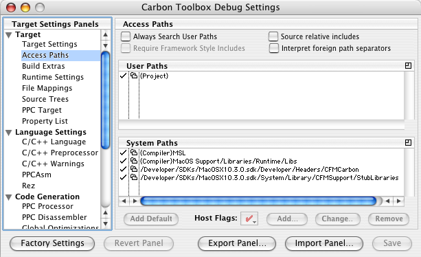

|
Q: I am using Metrowerks CodeWarrior as my IDE for my legacy CFM application. I would like to take advantage of the new APIs introduced in the latest releases of Mac OS X but the Universal Headers have not been updated since Mac OS 9.2.2. What can I do?A: You can use the more recent headers and libraries which are now provided with the Xcode Tools installation disc: - 1) Get the latest Xcode Tools CD. The files that you need have been provided on the Xcode Tools CD since version 1.2 and later. If you are a member of our Developer Programs, you are receiving the Xcode Tools CDs each time a new version is available, and you also can download those tools at the Apple Developer Connection Member Site. - 2) Install the Cross-Development SDKs. Open the Xcode installation package in the Installer application, and proceed to the point where you can customize the installed files (see Figure 1). Figure 1: Click on the Customize button.  Find the Cross-Development SDKs option (see Figure 2) and make sure you check the versions you want to install (you may want to install just one or more) and then to proceed with the installation. Figure 2: Check the appropriate SDK versions.  For example, to ensure that you only use APIs available on 10.2 and later, you should choose the 10.2 SDK. Or, if you want to build an application that uses APIs in the Mac OS X Panther release but you don't want to install Panther on your development machine, you might choose the Mac OS X 10.3 SDK even though your development machine is running 10.2. - 3) Set your access paths. In CodeWarrior, in your Project Settings (Edit menu), click on the "Access Paths" Settings panel (see Figure 3) to set up your access paths to: /Developer/SDKs/MacOSX<version number>.sdk/Developer/Headers/CFMCarbon/ for your headers and use the following stub library in your project: /Developer/SDKs/MacOSX<version number>.sdk/System/Library/CFMSupport/StubLibraries/CarbonLibStub Figure 3: Setting your access paths.  Note: you probably already did but just in case, do not forget to specify as a prefix:
so that all the macro definitions are set up correctly in Document Revision History
Posted: 2004-10-08 |
|